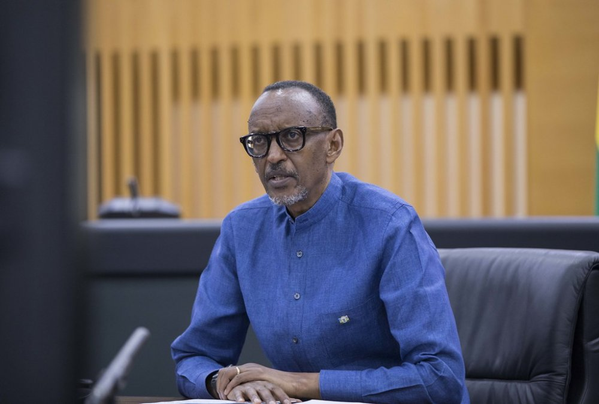
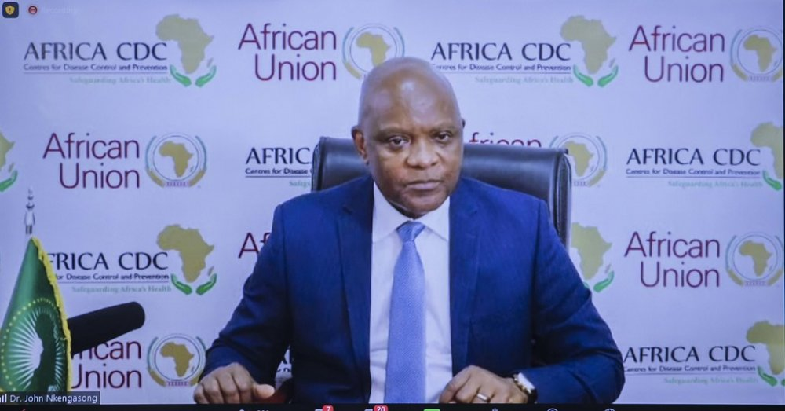

azakoreshwa mu gufasha Abanyafurika miliyoni 50 kubona inkingo za Covid-19. Aya mafaranga kandi azakoreshwa mu kuzahura ubukungu bw’uyu Mugabane bwashegeshwe n’iki cyorezo ndetse anakoreshwe mu gutangiza ibikorwa byo kubaka inganda zizakorera inkingo n’imiti kuri uyu Mugabane. Perezida Kagame yavuze ko urwego rw’ubuzima ku Mugabane wa Afurika rutitaweho nk’uko bikwiye mu myaka ishize,
bikagaragarira mu buryo rwahungabanyijwe cyane na Covid-19, bityo ko ibi bikwiriye gusigira isomo Afurika, igahindura imyumvire mu bijyanye no guteza imbere urwego rw’ubuzima. Yagize ati “Ntitugomba kuva muri iki cyorezo tugifite imyumvire yo gukora ibintu nk’uko twari dusanzwe tubikora. Ibyo bivuze ko tugomba gushora umutungo wacu mu bikorwa byo guteza imbere urwego rw’ubuzima mu bihugu byacu.”
Perezida Kagame kandi yashimye ubu bufatanye, avuga ko iri shoramari ari intambwe nziza izashoboza Afurika kugera ku “Ntego y’igihe kirekire yo kubaka ubushobozi bwo gukorera imiti n’inkingo ku Mugabane wa Afurika.” Yagize ati “Ubu bufatanye hagati ya Mastercard na Africa CDC bwubakiye kuri iryo shoramari,
kandi buzadufasha kugera kuri byinshi turi kumwe mu gihe kiri imbere.” Afurika ikataje urugendo rwo kwikorera inkingo Kugeza ubu Afurika ikoresha inkingo zingana na 25% by’inkingo zikorerwa ku Isi, ariko ikikorera 1% byazo gusa. Umuyobozi wa Africa CDC, Dr. John Nkangason , yavuze ko Afurika ifite intego y’uko mu mwaka wa 2040, uyu Mugabane uzaba wikorera 60% by’inkingo zose ukeneye, ibizatuma ugira ubushobozi bwo guhangana n’ibyorezo by’ahazaza. Uyu muyobozi yavuze ko ibiganiro byo kubaka inganda zizakorera inkingo ku Mugabane wa Afurika birimbanyije,
aho bikiri mu cyiciro cy’ubujyanama muri rusange. Nkangasong yavuze u Rwanda rwagaragaje ubushake bwo kuba muri byo bihugu bya Afurika bizakorerwamo inkingo, ati “Perezida Kagame yagaragaje ubushake bw’uko u Rwanda rwiteguye kwinjira muri iyi gahunda yo gukorera inkingo ku Mugabane wa Afurika.” Perezida Kagame asanganywe inshingano zo gushishikariza ibindi bihugu bya Afurika kongera ingengo y’imari bishora mu rwego rw’ubuzima.
Ibindi bihugu bya Afurika byagaragaje ubushake bwo kwikorera inkingo birimo Ghana, Tunisia, Morocco, Senegal, Afurika y’Epfo, Misiri n’ibindi bikiri mu biganiro by’ibanze. Perezida Kagame kandi yavuze ko Afurika ifite ubushobozi bwo kugera ku ntego yo kwikorera inkingo,
ati “Umuryango wa Afurika Yunze Ubumwe na Nepad bafite ubushobozi bwo gufasha ibihugu bya Afurika kugera kuri iyi ntego.” Nkangasong yasabye ko ibihugu bikize bifite inkingo ziruta ibyo zikeneye, bikwiye gufasha Afurika kubona inkingo kuko ari bwo buryo bwiza bwo kurandura icyorezo cya Covid-19 ku Isi yose.  